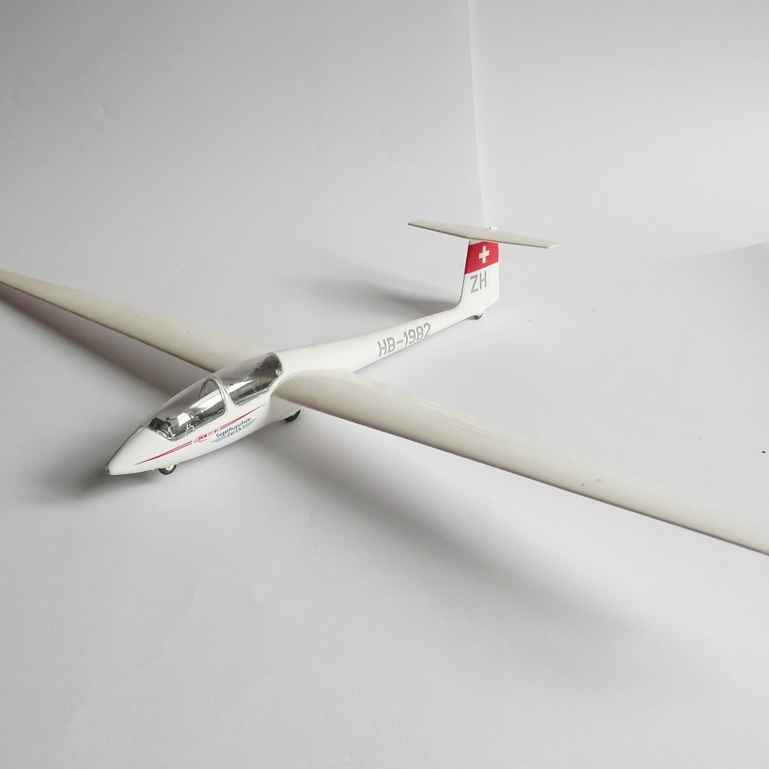
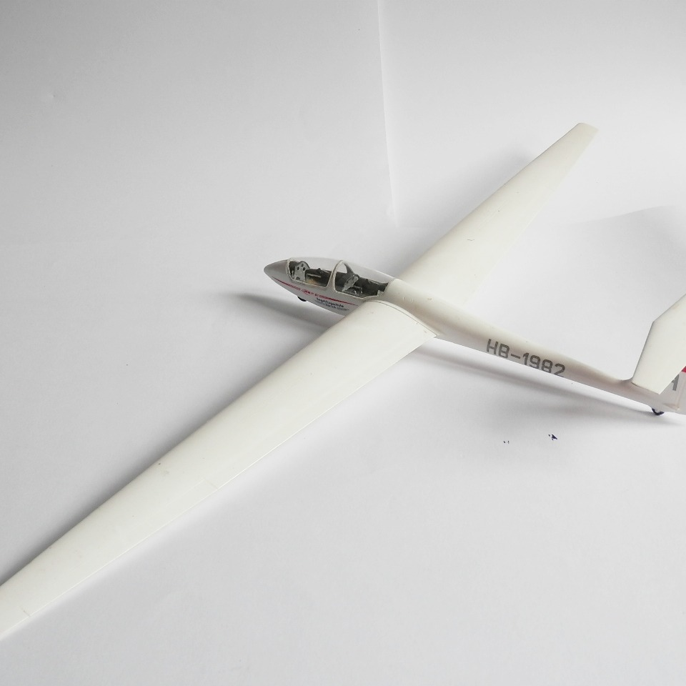

Aerei · scale model archive
ASK 21 glider
ASK 21 glider — Kit: Revell, Scale: 1/32. Segelflugschüle Zürich 1988 Another nice glider kit from Revell, the Swiss livery is quite elegant

Photo gallery

English description
Segelflugschüle Zürich 1988
Another nice glider kit from Revell, the Swiss livery is quite elegant
Descrizione italiana
Segelflugschule Zürich, 1988. Un altro bel kit Revell di aliante; la livrea svizzera è piuttosto elegante.